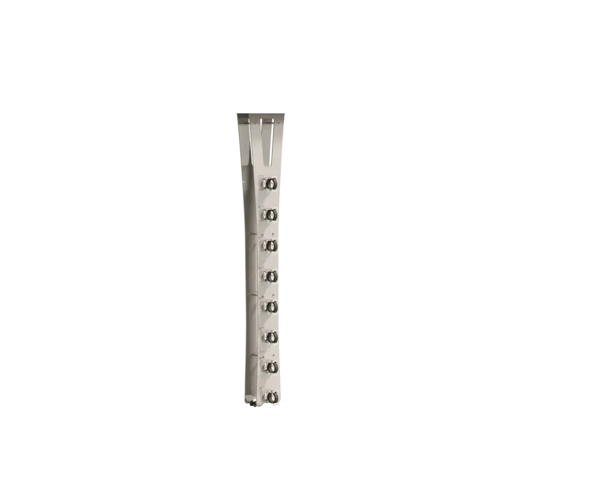
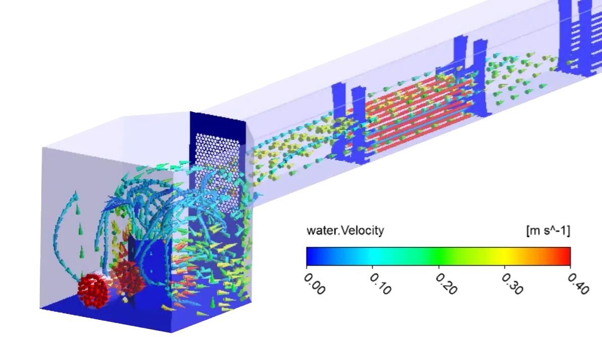
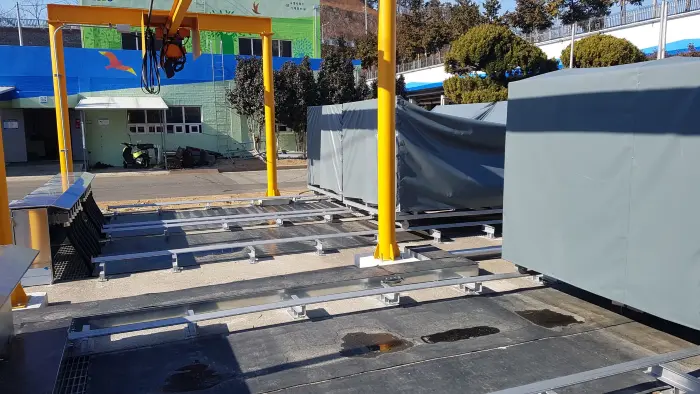
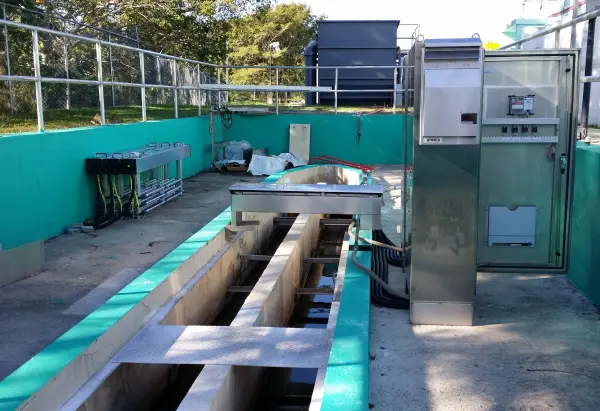
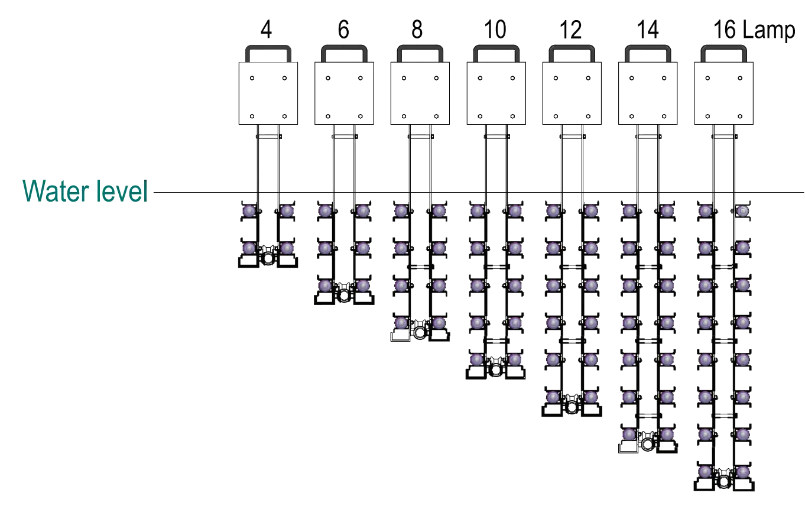

| 구분 | 사양 |
|---|---|
| 적용 규모 | 소규모부터 대규모 처리시설 |
| 램프 배치 | 수평형, 유동 방향과 평행 |
| 모듈 구성 | 모듈당 2~16개 램프 |
| 수위 제어 (옵션) | ALC(평형식 수위 제어 게이트), 전동식 웨어 게이트 또는 고정식 웨어 |
| 모듈 재질 | STS304 / STS316 / STS316L |
| 램프 종류 | 저압 아말감 램프 / 320W |
| 세척 시스템 | 리미트 스위치가 적용된 전동식 자동 와이퍼 장치 |
| 모니터링 장치 | UV 강도 모니터, 레벨 센서 |
| 운전 수온 | +5°C- +45 |


개인정보 처리방침: Neotec UV는 기업 고객의 상담 및 전문 서비스 문의 처리를 위해 필요한 최소한의 개인정보만 수집합니다.
수집하는 개인정보 항목: 문의 유형, 이름, 휴대전화번호, 이메일 주소 및 문의 내용
개인정보 수집 및 이용 목적: 고객 문의 검토 및 답변, 엔지니어링 상담 지원, 지속적인 고객 커뮤니케이션을 위한 상담 이력 관리
개인정보 보유 및 이용 기간: 제출된 모든 개인정보는 접수일로부터 2년간 안전하게 보관되며, 보유 기간이 경과하면 영구적으로 파기됩니다.
Cookie Policy: Neotec UV는 쿠키 데이터를 수집, 저장 또는 추적하지 않습니다. 당사 웹사이트는 정적인 정보 제공을 목적으로 설계되었으며, 사용자 추적이나 세션 정보를 저장하지 않는 독립적인 브라우징 환경을 제공합니다.